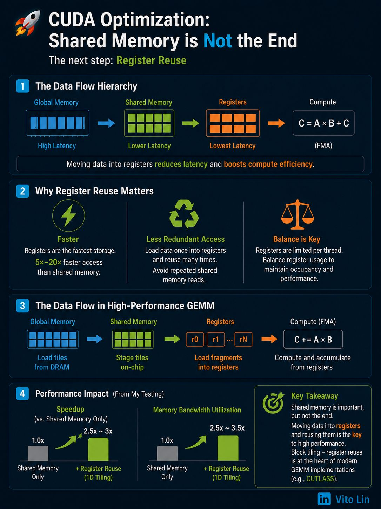

Register tiling: the foundation of high-performance CUDA GEMM
Register tiling is the foundation of high-performance CUDA GEMM.
Beyond shared memory
Most CUDA tutorials focus on using shared memory to reduce global memory traffic. This is a crucial step for improving GEMM (matrix multiplication) performance, because global memory latency is much higher than on-chip memory latency. Shared memory therefore provides a major speedup for both training and inference workloads.
But shared memory is not the end of the optimization pipeline. High-performance GEMM implementations, such as CUTLASS, heavily rely on block tiling with register reuse.
The core idea
Instead of repeatedly reading tiles from shared memory during computation, each thread loads small fragments from shared memory into registers and computes directly from registers.
The data flow becomes:
Global Memory → Shared Memory → Registers
Two benefits
1. Even lower latency than shared memory. Registers are the fastest storage available on the GPU. Accessing registers is significantly faster than accessing shared memory, which can theoretically provide a 5×–20× performance improvement in compute-heavy kernels.
2. Elimination of redundant shared memory accesses. Once values are loaded into registers, threads can repeatedly reuse them without repeatedly reading from shared memory. This reduces unnecessary data movement and improves overall efficiency.
If shared memory is the only optimization used, data inside shared memory may still be repeatedly accessed by multiple threads. Register tiling minimizes these redundant accesses and increases arithmetic intensity. However, registers are also a very limited per-thread resource — excessive register usage can reduce occupancy, so balancing register pressure and parallelism becomes critical.
My implementation and results
In my own GEMM implementations, I typically load fragments of tile A and tile B into registers, then perform accumulation directly from registers.
In testing, using 1D tiling with register reuse achieved roughly 2.5×–3× higher performance compared to using shared memory alone. At the same time, memory bandwidth utilization improved by nearly 2.5×–3.5×, because the kernel was able to perform more computation per byte loaded from memory.
